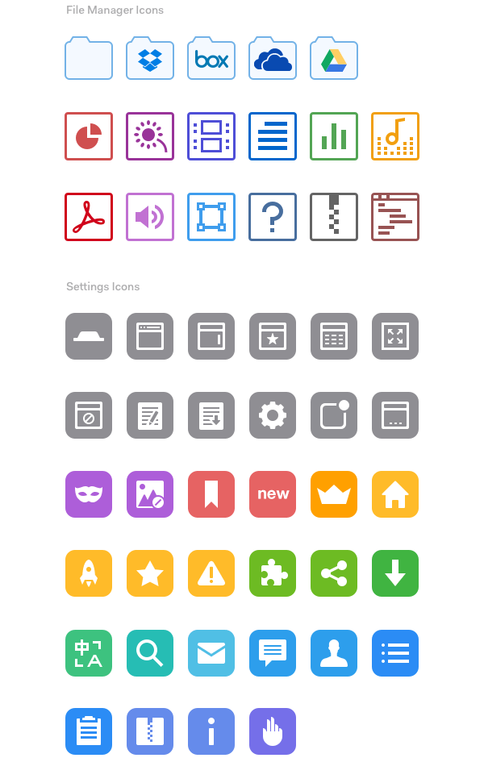
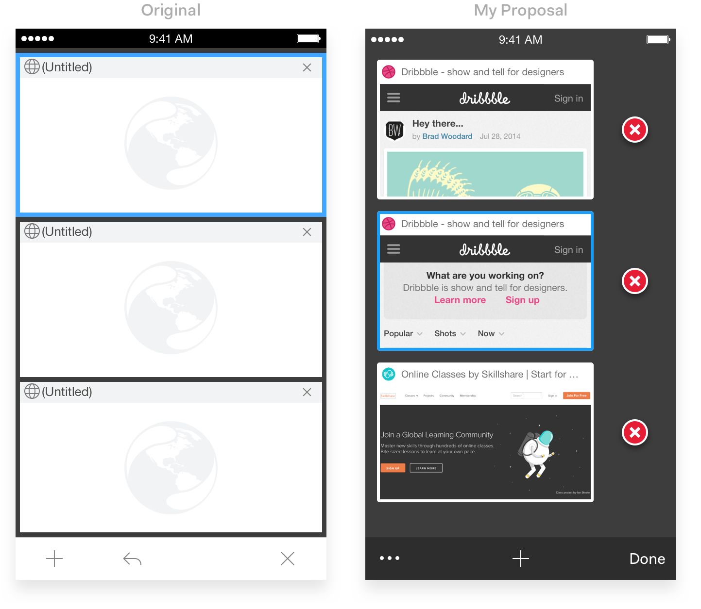
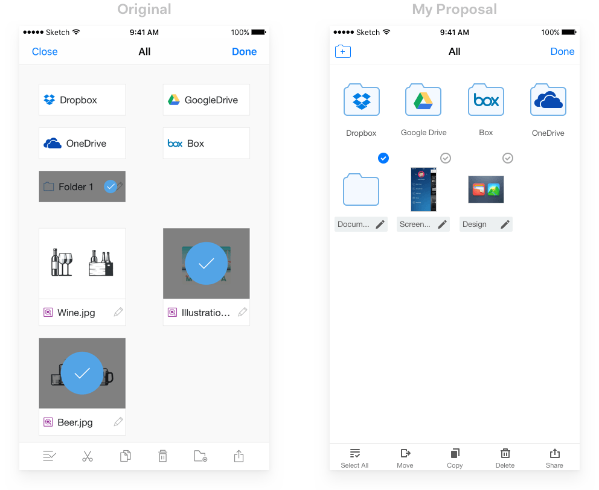

Mercury 浏览器 app 是我参加工作不久后第一个全权负责的项目，项目周期接近三年。哪怕到今天，那三年里发生的事我都还记得，每每想起来，总觉得很美好。
可惜的是，因为整个项目差不多开发了有五年时间，直到 2015 年底都没能找到合适的持续性盈利点，所以只好把项目停了，不再提供后续开发支持。
这里，我会讲讲整个项目在设计方面遇到的一些问题，以及我是如何处理的。
视觉统一
Mercury app 功能众多，相互之间看起来多少是有些区别的。也就是说，在我接手之前，它的整体视觉统一性不够。我觉得作为视觉设计师，这就像是本能反应，看到任何视觉上有不和谐的地方，都会忍不住想要把它改掉。🙈

交互体验
说完视觉部分，再说说 app 体验 - 其实原先的交互并没有那么糟糕，但还是存在很多可以改善的地方，例如：提供即时用户反馈，补充页面的空状态等等。
就拿下面这个切换不同浏览页面的交互来说吧。有几个问题：1. 关闭一个页面的操作点按区域着实有点小，不容易看到，而且好几次我都是需要按几次才能操作成功；2. 整个页面只能放下三个页面，并且看起来很拥挤；3. 底部工具栏上的图标表意不够明确，比如那个看着像返回的图标你能猜到它的作用么（它是撤销关闭页面操作的意思）？还有那个长得像“高大版”的关闭的图标，它是关闭全部页面还是退出切换浏览页面？用户需要至少试错一次才能知道它们各自的用途，这样不好。

还有文件管理器的编辑页面。很明显你可以看出：1. 整个页面大量空白区域被浪费，页面布局完全可以调整为一行四个，而不是当前的一行两个排布；2. 编辑文件名称的图标点按区域太小，用户要很小心翼翼才能点按到，更不要说文件夹被选中时编辑图标完全被遮住了；3. 同样的，你能一眼就看出工具栏上的图标的意思么（所以我给图标加了文字说明，因为确实有时候有些图标不管你怎么设计都不够表意清楚，借助文字说明就能解决这个问题）。还有就是“添加文件夹”的图标好像跟编辑页面内容没什么关系，为什么要放在一起呢？

总结
哈哈哈，真的是一边写着这些内容，之前的那些回忆就一边不停地在脑海里重播啊。想想那时候真是一股脑想要把这个 app 设计到完美（虽然说没有什么是真的完美）。每天下班回去通勤路上，就是打开手机，去使用这个 app，看看哪里用起来不爽，回到家就草稿画画原型，第二天到公司跟相关同事讨论看有没有合理性，没问题了就立即进行开发，开发完了，测试 ok 就上线。那种感觉很美妙，我很想念它。😊